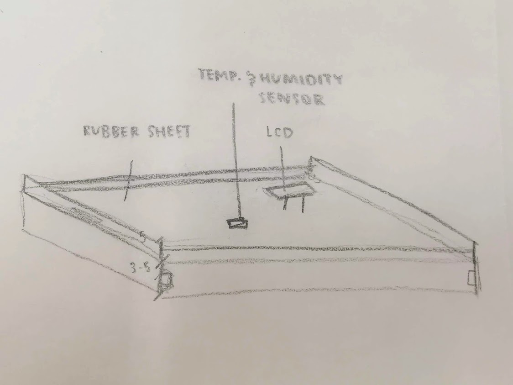
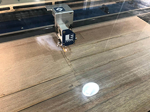
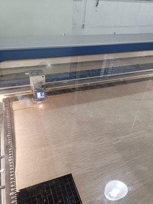
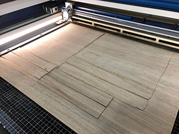

Jeanine's Website
Final Project
On 31 January 2020, we looked into the possible projects we couold work on. As stated in the final project requirement, the project work needs to include components made using 3D printing, laser cutting, and electronic parts.
Project kickstarter
As architecture students, we spend all time, all day immersed in our never-ending projects, catch up on our submissions, as well as toggle between multiple modules and presentations. Due to the workload imposed on us, meal and rest times are never on our minds. We frequently find ourselves packing food , rush-eating outside our studio, and as a result, scalding ourselves.
Hence, this sparked an idea for our project.
Project SmartMat
Project SmartMat is a smart table mat which comes with a built-in temperature and humidity sensor to help measure the temperature of our packed food. Not just that, the table mat also has a LCD screen at the surface to show the measured temperature and humidity of the packed food. This way, it can prevent the chances of getting scalded during meal times :)


Our Team
Kun Teng : In charge of 3D printing
Rifky : In charge of coding
Airiez : In charge of hardware and Arduino handling
Myself (Jeanine) : In charge of laser cutting and product design
Progress
By referring to the sketches, our group split ourselves up so as to finish the project at a much faster pace as we were dealing with our final Architecture project concurrently. As such, Rifky and Airiez focused on getting the coding done, while Kun Teng and I focused on putting the product together.
On my part, I started drawing the tray on Fusion360 so that the file can be used to laser cut later on.

After i was done with making the amendments to the dimension, as well as to the design of our idea, I went ahead to convert the file into a DXF file, where I later then open it in Inkscape to group the objects together. However, during the conversion, the tabs on the sides of tray was not converted. As such, the file was incorrect.


Thankfully, Steven helped me to make amendments to the file, and we managed to correct the mistake that was made earlier. The below photos contain the documentation of the laser cutting process. (Photo taken by Steven)

During the laser cutting process, I realised that there was a little flame and smoke coming from the wood. This was something that required additional supervision as should the flame not extinguish soon enough, it can potentially cause a fire inside the laser cutting machine. This can be seen in the picture I've provided below.

Lastly, the below shows the finished laser cut template. (Photo taken by Steven)

The below documents the laser cutting process. Note how there were slight flames and smoke. As taught during our Fablab Safety and reiterated by Steven, the flames should extinguish in less than 5 seconds. Should the flames sustain after more than 5 seconds, immediately inform a lecturer or instructor on duty, and press the emergency stop button to stop the process. (Videos taken by Steven)